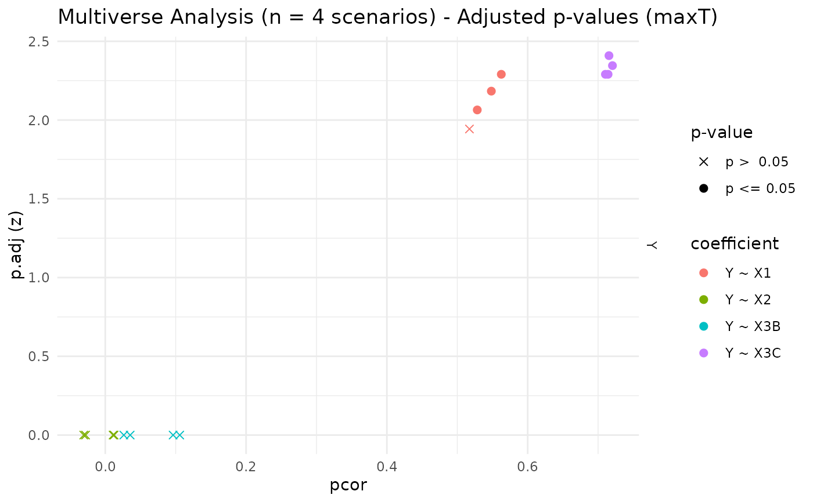
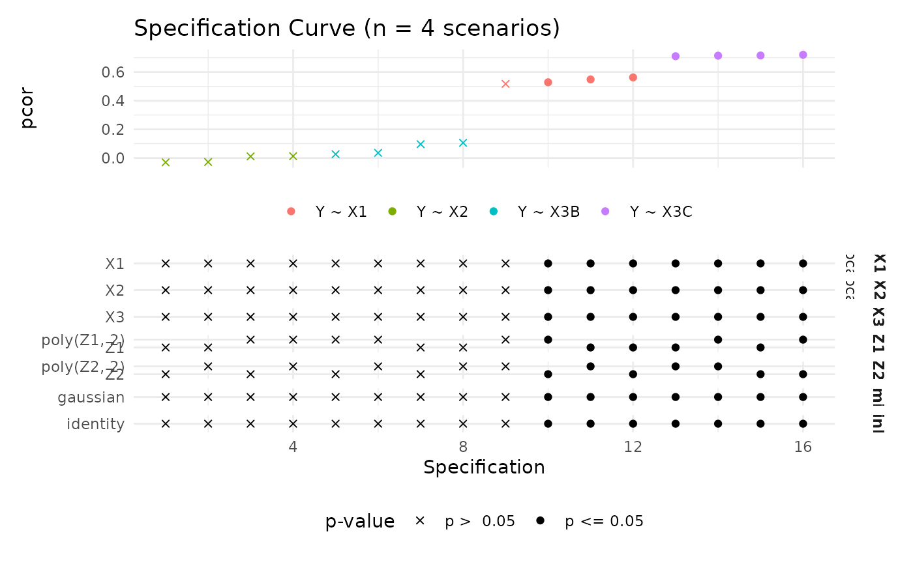

Applies the PIMA procedure to make selective inference on one or more parameters within a multiverse of models, derived from different specifications of the data (e.g., pre-processing) and of the model itself (GLMs). The method jointly computes resampling-based test statistics for all coefficients of interest in all models. The output allows for multiple testing in multiverse analysis, providing weak and strong control of the Family-Wise Error Rate (FWER) and confidence bounds for True Discovery Proportions (TDPs).
Usage
pima(
mods,
tested_coeffs = NULL,
method = NULL,
tail = 0,
extra = NULL,
id = NULL,
seed = NULL,
engine = "flipscores",
...
)Arguments
- mods
the models of the multiverse: a list of fitted models (usually
glmorlm; unnamed lists are namedmodel1,model2, ...), apima.multiobject created bycreate_multi()or amultiverseobject of the multiverse package.- tested_coeffs
tested coefficients. It can be a vector of names, tested in each model where they are present (every model must contain at least one of them), or a list of the same length as
mods, where each element is a vector of coefficient names of that model (matched by name when the list is named). The list is needed when the same variable enters the models in different forms (e.g.x,log(x)): build it withsplit()onspec_table(mods, focal.var = "x"). IfNULL, all coefficients are tested.- method
multiplicity correction, among the ones of the engine (can be abbreviated). With
engine = "flipscores":"maxT"(default),"minP"or"none". Withengine = "multcomp", the types ofmultcomp::adjusted():"single-step"(default),"free","Westfall","Shaffer", or the methods ofstats::p.adjust()("holm","hochberg","hommel","bonferroni","BH","BY","fdr","none"). With"none"there are no adjusted p-values. IfNULL(default), the default of the engine.- tail
direction of the tests:
0(two-sided, default), a positive value (greater) or a negative value (less). Withengine = "flipscores"it is used for the adjusted p-values (passed top.adjust()); withengine = "multcomp"for all the p-values.- extra
optional data frame with one row per model (in the order of
mods) of additional information, added toinfoandsummary_table. Forpima.multiobjects the columnsmodel,subsetandfit_specof the scenarios (and.source,y.funwhen present) are added automatically.- id
identifier of the observations, passed to
flipscores::flipscores(): the name of a column of the models' data or a one-sided formula (e.g.~id). Used to align the scores of models fitted on different rows (e.g. after subsetting or removing missing values); repeated values define clusters. IfNULL(default), the scores are aligned by row names.- seed
seed of the random numbers, for reproducible results: the sign flips with
engine = "flipscores", the numerical integration of the adjusted p-values withengine = "multcomp". IfNULL(default), the current state of the random number generator is used.- engine
the test used:
"flipscores"(default), the sign-flip score test, or"multcomp", the experimental parametric test based onmultcomp::mmm()(see Engines below). To set the arguments of the engine (e.g.n_flips), usepima_flipscores()orpima_multcomp().- ...
not used: the arguments of the engines are given to
pima_flipscores()orpima_multcomp().
Value
Returns an object of class pima, containing:
Tspace: data frame of test statistics, where columns correspond to tests, and rows to sign-flipping transformations (the first is the identity).summary_table: data frame containing a summary for each tested coefficient in each model: estimate, score, standard error, z value, partial correlation, raw p-value, adjusted p-value.objects: list of model objects computed byflipscores.tested_coeffs: tested coefficients, as in input.engine: the engine used, with its arguments (seepima_flipscores()).
With engine = "multcomp" there is no Tspace, objects are the
fitted models and glht is the multcomp::glht() object.
Details
The procedure builds on the sign-flip score test implemented in flipscores::flipscores().
For each tested coefficient in each model, it computes a set of resampling-based test statistics and a raw p-value
for the null hypothesis that the coefficient is null against a two-sided alternative.
If method is maxT (default) or minP, multiplicity-adjusted p-values are added
using the step-down method of Westfall and Young (1993)
(see P-values below). Adjusted p-values provide control of the FWER
asymptotically in the sample size and, for practical purposes, almost exact control for any sample size.
Post-selection inference is achieved by merging information from the considered models: the adjusted p-values in the output summary provide strong FWER control and answer the question "Which effects in which models are significant?".
The number of sign flips and the other arguments of
flipscores::flipscores() are given to pima_flipscores(), e.g.
score_type, the type of score: the default "standardized" provides
almost exact control of the error for any sample size.
P-values
Let \(T_{jb}\) be the test statistic of the \(j\)-th tested coefficient
(\(j = 1, \dots, m\), over all the models) under the \(b\)-th
sign-flipping transformation (\(b = 1, \dots, B\), with \(B\) =
n_flips of pima_flipscores() and \(b = 1\) the identity), taken in absolute value for
two-sided tests. The raw p-value is the proportion of transformations
giving a statistic at least as extreme as the observed one:
$$p_j = \frac{1}{B} \sum_{b=1}^{B} \mathbf{1}\left(T_{jb} \ge T_{j1}\right).$$
With method = "maxT", a hypothesis \(H_j\) in the set \(R\) of the
hypotheses not yet rejected is rejected at level \(\alpha\) when
$$T_{j1} > c_\alpha(R), \qquad c_\alpha(R) = Q_{1-\alpha}\left(\max_{k \in R} T_{kb};\ b = 1, \dots, B\right),$$
then \(R\) is updated and the step is repeated until no further
hypothesis is rejected. The adjusted p-value \(\tilde p_j\) is
the smallest \(\alpha\) in the grid \(0.001, 0.002, \dots, 0.099,
0.1, 0.2, \dots, 0.9\) (rounded down to multiples of \(1/B\)) at which
\(H_j\) is rejected, and 1 if it is never rejected: adjusted p-values
are therefore reported on this grid. method = "minP" applies the same
procedure to the p-values of each transformation instead of the
statistics.
Engines
The engine is chosen with engine: a name ("flipscores" or
"multcomp") uses its default arguments, pima_flipscores() and
pima_multcomp() set them. The other arguments of pima() are common to
the engines.
With engine = "flipscores" (default) the tests are the sign-flip score
tests described above. With engine = "multcomp" (experimental, parametric) the
tested coefficients of all the models are tested jointly with
multcomp::mmm() and multcomp::glht(): the covariance between the
estimates of different models comes from the sandwich estimator of the
stacked estimating equations
(Pipper et al. 2012; Hothorn et al. 2008)
. p are
the univariate p-values and p.adj the p-values adjusted with the type
of multcomp::adjusted() given in method: "single-step" (default) and
"free" (its step-down version) use the correlation between the tests,
like the maxT procedure; se is the standard error of the estimate. The adjusted p-values are computed by
numerical integration, with a small random error: set seed (and, for more
precision, algorithm in pima_multcomp()).
Without id, the multcomp engine requires the models to be fitted on the
same observations, in the same order. With id (the name of a column of
the models' data, with no repeated values within a model), the scores of
each model are aligned on the union of the observations, with zeros for
the observations a model does not use.
References
Girardi P, Vesely A, Lakens D, Altoè G, Pastore M, Calcagnì A, Finos L (2024). “Post-selection Inference in Multiverse Analysis (PIMA): An Inferential Framework Based on the Sign Flipping Score Test.” Psychometrika, 89(2), 542–568. doi:10.1007/s11336-024-09973-6 .
Hemerik J, Goeman JJ, Finos L (2020). “Robust Testing in Generalized Linear Models by Sign Flipping Score Contributions.” Journal of the Royal Statistical Society Series B: Statistical Methodology, 82(3), 841–864. doi:10.1111/rssb.12369 .
De Santis R, Goeman JJ, Hemerik J, Davenport S, Finos L (2025). “Inference in Generalized Linear Models with Robustness to Misspecified Variances.” Journal of the American Statistical Association, 120(552), 2762–2771. doi:10.1080/01621459.2025.2491775 .
Hothorn T, Bretz F, Westfall P (2008).
“Simultaneous Inference in General Parametric Models.”
Biometrical Journal, 50(3), 346–363.
doi:10.1002/bimj.200810425
.
Pipper CB, Ritz C, Bisgaard H (2012).
“A Versatile Method for Confirmatory Evaluation of the Effects of a Covariate in Multiple Models.”
Journal of the Royal Statistical Society: Series C (Applied Statistics), 61(2), 315–326.
doi:10.1111/j.1467-9876.2011.01005.x
.
Westfall PH, Young SS (1993).
Resampling-Based Multiple Testing: Examples and Methods for p-Value Adjustment.
Wiley, New York.
See also
Other PIMA inference:
pima-method,
pima_flipscores(),
pima_tree()
Examples
# Generate data
set.seed(123)
n <- 30
D <- data.frame(X1 = rnorm(n), X2 = rnorm(n)^2,
X3 = sample(c("A","B","C"), n, replace = TRUE),
Z1 = rnorm(n), Z2 = rnorm(n))
D$X3 <- factor(D$X3)
D$Y <- D$X1 + ifelse(D$X3 == "C", 3, 0) + D$Z1 + rnorm(n)
# Multiverse of 4 models (list)
mod1 <- glm(Y ~ X1 + X2 + X3 + Z1 + Z2, data = D)
mod2 <- glm(Y ~ X1 + X2 + X3 + poly(Z1,2) + Z2, data = D)
mod3 <- glm(Y ~ X1 + X2 + X3 + Z1 + poly(Z2,2), data = D)
mod4 <- glm(Y ~ X1 + X2 + X3 + poly(Z1,2) + poly(Z2,2), data = D)
mods <- list(mod1 = mod1, mod2 = mod2, mod3 = mod3, mod4 = mod4)
# Test selected coefficients (raw and adjusted p-values)
res <- pima(mods, tested_coeffs = c("X1","X2","X3B","X3C"))
summary(res)
#> model coefficient response estimate score se z
#> 1 mod1 X1 Y 0.78307160 17.8213338 6.466934 2.75576247
#> 2 mod1 X2 Y -0.03487619 -0.8090405 5.400644 -0.14980444
#> 3 mod1 X3B Y 0.35617971 0.7932424 1.680412 0.47205239
#> 4 mod1 X3C Y 3.84072163 8.2314604 2.348491 3.50500044
#> 5 mod2 X1 Y 0.72629268 15.4918148 6.113690 2.53395486
#> 6 mod2 X2 Y 0.01271001 0.2813522 5.288144 0.05320434
#> 7 mod2 X3B Y 0.10120561 0.1990864 1.576861 0.12625491
#> 8 mod2 X3C Y 3.82527224 8.1945234 2.371806 3.45497212
#> 9 mod3 X1 Y 0.77061825 16.7796414 6.380338 2.62989832
#> 10 mod3 X2 Y -0.03194657 -0.7391964 5.502226 -0.13434496
#> 11 mod3 X3B Y 0.40282712 0.8447175 1.665099 0.50730763
#> 12 mod3 X3C Y 3.88604285 7.8842090 2.314112 3.40701274
#> 13 mod4 X1 Y 0.71747549 14.7684445 6.087130 2.42617535
#> 14 mod4 X2 Y 0.01434233 0.3170770 5.399346 0.05872507
#> 15 mod4 X3B Y 0.14027015 0.2589413 1.561077 0.16587345
#> 16 mod4 X3C Y 3.86022751 7.8218878 2.335075 3.34973717
#> pcor p p.adj family link wald.p
#> 1 0.56251766 0.0052 0.022 gaussian identity 3.422008e-03
#> 2 -0.03057870 0.8910 1.000 gaussian identity 8.846323e-01
#> 3 0.09635729 0.6232 1.000 gaussian identity 6.468163e-01
#> 4 0.71545522 0.0080 0.016 gaussian identity 5.815049e-05
#> 5 0.52836611 0.0188 0.039 gaussian identity 7.951154e-03
#> 6 0.01109387 0.9676 1.000 gaussian identity 9.589680e-01
#> 7 0.02632597 0.8964 1.000 gaussian identity 9.028149e-01
#> 8 0.72041149 0.0064 0.019 gaussian identity 7.184332e-05
#> 9 0.54837171 0.0094 0.029 gaussian identity 5.528913e-03
#> 10 -0.02801286 0.9054 1.000 gaussian identity 8.966191e-01
#> 11 0.10578095 0.5958 1.000 gaussian identity 6.227629e-01
#> 12 0.71041126 0.0212 0.022 gaussian identity 1.003804e-04
#> 13 0.51726232 0.0332 0.052 gaussian identity 1.148234e-02
#> 14 0.01252023 0.9628 1.000 gaussian identity 9.547855e-01
#> 15 0.03536434 0.8624 1.000 gaussian identity 8.727291e-01
#> 16 0.71416636 0.0206 0.022 gaussian identity 1.294019e-04
# Specifications and adjusted p-values
plot(res)

spec_curve(res)
#> Warning: more than one coefficient and no `yvar` specified. Using 'pcor'.
